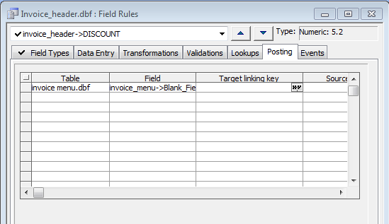
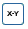

Creating a Posting Field Rule
During data entry, you can post values in the current field to matching records in a second table, thus adding to, subtracting from, or replacing the value in a second table.

For example, you can keep a running total of each week's or month's sales by posting an Invoices total field, using the Append operation, to a grand_total field in another table. Or, you can track product inventory levels using the Subtract operation.
The table to which you post values must have fields in common with the current table. (The common fields are called linking key fields.) You post data between records with matching linking keys.
Defining a posting Field Rule involves:
Choosing the target table and field
Specifying the linking keys
Choosing the posting operation
 Note : When you use
a posting Field Rule, the posting occurs during data entry each time you
enter a new record or change a record. Target field values are always
up-to-date. Contrast this with using the Post Operation, in which a batch processing operation is performed. All
matching values for multiple records are posted when the operation is
run.
Note : When you use
a posting Field Rule, the posting occurs during data entry each time you
enter a new record or change a record. Target field values are always
up-to-date. Contrast this with using the Post Operation, in which a batch processing operation is performed. All
matching values for multiple records are posted when the operation is
run.
 Note : Post operations
performed with field rules only occur when data is input through an Alpha
Anywhere form or browse, not through an Xbasic operation or Web Application.
Note : Post operations
performed with field rules only occur when data is input through an Alpha
Anywhere form or browse, not through an Xbasic operation or Web Application.
 Note : Post operations
do not support memo fields.
Note : Post operations
do not support memo fields.
Select the table in the Table/Sets tab of the Control Panel.
Select Design > Field Rules.
Select the field that you want to post from the drop-down list box at the upper left corner of the dialog box.
Display the Posting tab.
You can post to one or more fields. For each target field you want to use, complete one row in the Posting Target table. The target table should have a field in common with the source table.
In the first row of the Table column click
 to
select the target table that will receive the data that you are posting.
to
select the target table that will receive the data that you are posting.In the first row of the Field column click to select the field that will receive the data. The target field should be the same type as the source field. If you set up a posting rule that adds numbers, be sure the target field you choose is large enough to hold the results you expect.
Repeat steps 5 and 6 for each field that you want to post.
To indicate which records in the target table should receive posted information from the source field, you must specify matching target and source linking keys. A key is a field or combination of fields (in an expression) that uniquely identifies the records in a table. Values are posted only between records with matching key values.
The linking keys used here have the same purpose as in the Post dialog. For more information, see Overview: Operations.
 Note : Do not
choose a linking key field from the target table that contains duplicate
values. If several records in the target table match the current source
record, only the first matching record receives the posted data.
Note : Do not
choose a linking key field from the target table that contains duplicate
values. If several records in the target table match the current source
record, only the first matching record receives the posted data.
Enter the name of the field (or an expression) in the target table that uniquely links the current (source) and target (destination) tables into the Target linking key column. Click  to use the Expression Builder to help you compose an expression.
Enter the name of the field (or an expression) in the current table that uniquely links the current (source) and target (destination) tables into the Source linking key column. Click to use the Expression Builder to help you compose an expression.
Select an operation from the Operation column. When you change the source field value, the difference between the new and the old value is added or subtracted. For example, using Add, if you change 2,000 to 2,500, Alpha Anywhere adds 500 to the target field. If you change 2,000 to 1,500, Alpha Anywhere subtracts 500. The options are:
"Replace" - Substitutes the source field value for the target field value. Available for only numeric fields.
"Add" - Subtracts the source field value from the target field value. Available for only numeric fields.
"Subtract" - Adds the source field value to the target field value.
To specify that values are posted to the target field in only some cases, use the Condition column in the Posting table. You can include fields from the source and target tables in the Conditional expression. If the expression evaluates to TRUE for a record, the value is posted; otherwise, it is not. Click to use the Expression Builder to help you compose an expression.
When you delete a source record, you may want to undo the changes made by the Posting Field Rule in the target tables. Within a posting Field Rule, the Undo on delete column lets you specify whether posts should be reversed for any or all of the target fields you define. By default, Undo on delete is set to "Yes".
For example, you have a table that lists all of the checks you write. You post the check amount to a Total field in the Summary table to keep track of your account balance. If you delete a check, the Undo on delete option will add back the check amount to the Total field in the Summary table. Add and Subtract operations (not Replace operations) made to the Summary table will be reversed if the source record in the transaction table is deleted.